| Directriz: Patrones de componentes de servicio |
 |
|
| Elementos relacionados |
|---|
IntroducciónEn la descomposición de un componente de servicio en sus componentes funcionales y técnicos, hemos delegado la funcionalidad suministrada por el componente de servicio para cumplir con las responsabilidades funcionales del subsistema. Los componentes funcionales suministran la funcionalidad empresarial necesaria, mientras los componentes técnicos proporcionan funcionalidad genérica como autenticación, manejo de errores, auditoría, registro, etc., que son operativos y no están orientados a lo funcional. Un modelo de servicio es un artefacto del diseño. Como tal, no está relacionado directamente con la implementación de servicios. No obstante, la implementación real de un servicio o de un conjunto de servicios es estrictamente llevada a cabo por la realización de un componente de servicio de una especificación de servicio. La especificación de servicio proporciona el contrato de implementación; la tecnología o las técnicas utilizadas para implementar el servicio son irrelevantes siempre que se cumpla el contrato. En el concepto Arquitectura orientada a servicios, introdujimos la siguiente imagen mostrando la relación entre los servicios identificados y los componentes y objetos que ofrecen la implementación de estos servicios. 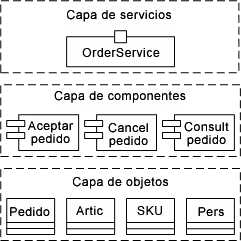 De este modo, podemos ver cómo el RUP Modelo de diseño se puede utilizar para capturar el diseño de las capas de objeto y componente, con artefactos y modelos de implementación que capturan detalles de la capa de objeto y artefactos de despliegue e implementación asociados. Los aspectos importantes de la relación entre el Modelo de servicio y el modelo de diseño de componentes son que el conjunto de especificaciones de servicio representa contratos que deben cumplirse, que las operaciones identificadas en las especificaciones deben implementarse tal cual y que los clientes de servicios utilizan este mismo modelo para comprender la interfaz y el comportamiento de los servicios que esperan utilizar. De esta forma, hay una relación directa y, en general, de uno a uno, entre la especificación de servicio y algún artefacto de implementación que actúa como punto de entrada de implementación inicial para el servicio. Por ejemplo, tenga en cuenta el siguiente diagrama de un proveedor de servicio, que muestra los detalles de los elementos de modelo utilizados en su definición. 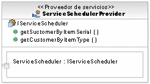 La clave para el uso del componente de servicio es que debería ser directamente rastreable para el modelo de servicio. La forma más fácil de conseguirlo es hacer uso del hecho de que el elemento de especificación de servicio es una interfaz UML que puede ser ejecutada por el componente de servicio y, por lo tanto, garantiza su conformidad con la especificación estructural. De esta forma obtendríamos el siguiente resultado: 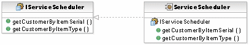 Ahora es responsabilidad del implementador de componentes definir un conjunto de componentes y clases que proporcionen el comportamiento del componente resultante. Tipos de componentes de servicioComponentes funcionalesLa composición de estos componentes funcionales en un componente de servicio mayor no es meramente estructural; también implica la definición de flujo, esto es, la colaboración de los componentes funcionales para ofrecer funcionalidad que de soporte a los procesos empresariales. Tal como vimos anteriormente, la funcionalidad de estos componentes relacionados con la empresa se activa a través de los servicios (implementados por el objeto de nivel más preciso del componente o de la estructura de sistema existente) definidos. Resulta importante observar que este paso incluye actividades OOAD tradicionales. Tenemos un ámbito centrado y bien particionado para dirigir el diseño del objeto. En el diseño orientado al objeto tradicional, tendemos a crear gráficas de objeto mucho más dependientes mientras que si un análisis del subsistema sigue la identificación de áreas funcionales dentro de la empresa, tenemos un ámbito definido de forma muy clara en el que centrarnos y hacia el que dirigir nuestras energías de diseño. Esto produce un conjunto de modelos de objetos no estrechamente unidos (diagramas de clase y diagramas de secuencia desencadenados por guiones de uso de sistema). Componentes técnicosLa composición de componentes técnicos en componentes de servicio mayores se produce de la misma forma que en el caso de los componentes funcionales. Los componentes técnicos como la autenticación, el registro y la creación de informes se pueden utilizar en los procesos empresariales. Estos componentes comunes son necesarios para formar la infraestructura que de soporte a los componentes funcionales. Una de las variaciones clave de los procesos empresariales es debida a las reglas empresariales tal como se muestra a continuación en la figura "Patrón de componente de empresa". Estas variaciones se capturan normalmente durante el diseño orientado a variaciones. Patrones de componentes de servicioEl haber dicho que el componente de servicio simplemente realiza la especificación de servicio no ofrece al implementador mayor ayuda en ir de una definición de servicio de grano grueso a un conjunto de clases y artefactos de implementación de grano fino necesarias para proporcionar el comportamiento del servicio. En este sentido, resulta común confiar en patrones que proporcionan estructura al componente de servicio resultante, ya sea como infraestructura de inicio o como patrones específicos para solucionar requisitos de política particulares. Arquitectura de opción de patrón, dirigida por NFR [más] Tenga en cuenta que los estereotipos adicionales introducidos aquí se describen en Artefacto: Componente de servicio. Patrón de componente de servicio básicoEn la definición de la estructura inicial de un servicio, el siguiente patrón se ofrece como punto de inicio para la personalización y realización. 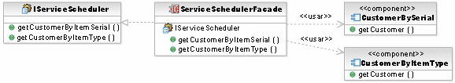 Los elementos del patrón son los siguientes:
A continuación se muestra la vista de estructura compuesta de este patrón. En este caso, la fachada es delegada por el propio componente de servicio. Como tal, los clientes que invoquen operaciones en el componente de servicio estarán siendo realmente atendidos por el componente de fachada. Tenga en cuenta que es posible utilizar puertos UML 2.0, así como exponer la interfaz y hacer esta delegación explícita mediante conectores. 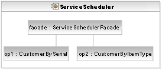 Patrón de componente de servicio de operación únicaEn algunos casos en los que los servicios se identifican en el modelo de servicio con varias operaciones, es más adecuado implementar las operaciones individualmente como servicios autónomos separándolos de las vistas de servicio físico y de servicio lógico. Dicho patrón tiene ventajas desde el punto de vista de la flexibilidad de provisión, la alta disponibilidad, el mantenimiento de versiones y la evolución pero pierde la noción de interfaz con un servicio como conjunto de operaciones relacionadas. Los componentes de servicio de modelado, según este patrón, tienen un único <<componente de servicio>> que ejecuta una sola interfaz con una sola operación, todas ellas denominadas según convenciones comunes y mostradas a continuación. 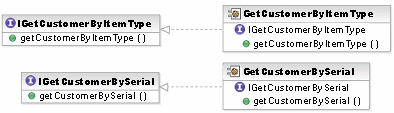 En este caso, tal como hemos mencionado, no hay realización directa de la especificación de servicio original por algún elemento del patrón anterior. Por tanto, parece que merece la pena introducir un elemento en el modelo que pueda proporcionar rastreabilidad a la especificación de servicio. En el ejemplo siguiente, hemos introducido un componente, estereotipado como <<subsistema>> que implementa la especificación de servicio y también posee los elementos descritos anteriormente.
Este patrón tampoco introduce el componente de <<fachada>> porque los clientes de los servicios son responsables de identificar los servicios que utilizan. Patrón de operación mediadaAllí donde existe la posibilidad de que una solicitud del cliente de servicio pueda ser direccionada a uno de los componentes de operación para su ejecución, es posible ampliar el patrón con un mediador que direccione estos mensajes, tal como se muestra a continuación. Tenga en cuenta que estereotipamos el componente/la clase como <<mediador>> con fines aclarativos. El mecanismo exacto utilizado para la mediación no se define. Un conjunto estático de implementaciones podría conocerse antes de tiempo, un registro de algún tipo podría también utilizarse para realizar correlaciones con la implementación particular basada en el cliente, el contenido del mensaje de solicitud, etc. Este patrón no tiene como objetivo su uso con los patrones de operación única mostrados anteriormente. 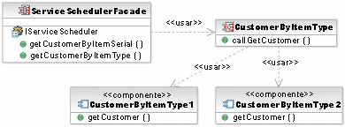 Esto también afecta a la vista de estructura compuesta del componente de servicio; tal como se muestra a continuación, la conexión del mediador aparece desde la fachada que la utiliza para dirigir las llamadas a los componentes de operación. 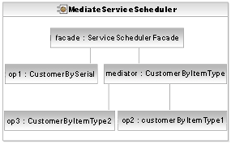 Si un registro, externo al propio mediador, se utiliza, no resulta necesario mostrar las dependencias de uso estático del mediador con los componentes de operación o los conectores entre piezas del diagrama de estructura compuesta. Por tanto, ¿cómo podemos modelar una dependencia del mediador con los componentes de operación mediados? En el siguiente diagrama, hemos introducido una interfaz que será implementada por cada componente de operación. Entonces podremos modelar el uso desde el mediador a la interfaz, tal como se muestra a continuación. 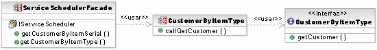 También cambiamos la relación en el diagrama de estructura compuesta, incluida una nueva pieza escrita por la interfaz, e indicamos la multiplicidad entre el mediador y los componentes de operación en el conector, tal como se muestra a continuación. 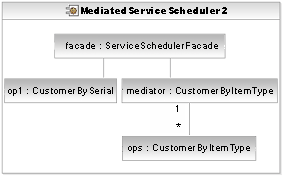 Componentes de acceso de datosAdicionalmente, allí donde las operaciones de servicio comparten requisitos de datos comunes, puede resultar útil resaltar los componentes específicos que ofrecen funciones de gestión de datos a la implementación. Observe que estereotipamos el componente/la clase como <<acceso de datos>> con fines aclarativos. 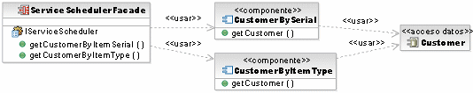 El patrón de componente de empresaEl siguiente patrón de componente de empresa muestra el componente de servicio que actúa como fachada para los componentes funcionales y técnicos subyacentes. Los servicios se exponen en el límite del componente de servicio de la fachada de componente. Las solicitudes para servicios de la fachada se reenvían a un mediador que a continuación direcciona el mensaje al componente funcional o técnico correspondiente. 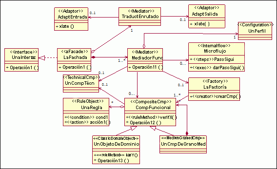 Patrón de componente de empresa Las dependencias y necesidades de los componentes funcionales con respecto a los componentes técnicos, para el ejemplo de Alquiler de un coche, se describen a continuación. 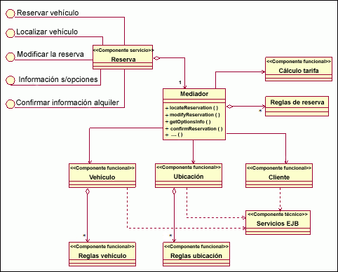 Componente de servicio de reserva Alquiler de un coche, que utiliza el patrón de componente de empresa La colección de modelos de componentes de subsistema se reúne en el modelo de componentes funcionales que muestra la dependencia de los componentes funcionales en los componentes técnicos, y las interrelaciones entre los propios componentes funcionales. Los subprocesos de nivel inferior que están asignados a la fachada del subsistema deben especificarse como servicios que el subsistema proporcionará. Estos subprocesos se soportan e implementan a través de un conjunto de guiones de uso del sistema más detallados, encapsulados dentro de la estructura del subsistema. Los componentes funcionales son dependientes para la realización de los guiones de uso. A su vez, los componentes funcionales dependen de los componentes técnicos y de las utilidades para sus necesidades de infraestructura. |
© Copyright IBM Corp. 1987, 2006. Reservados todos los derechos. |